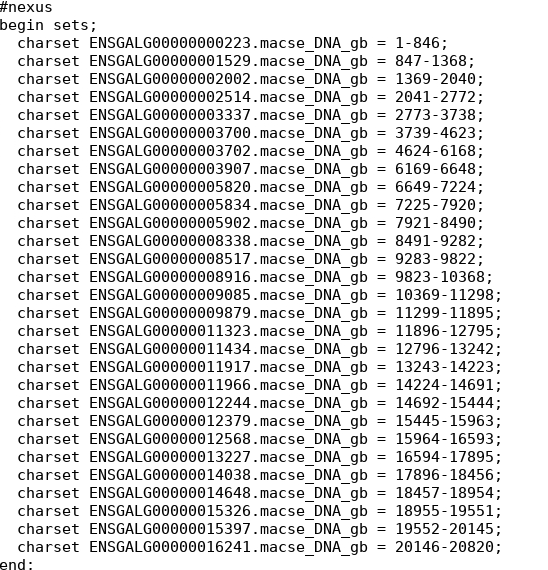
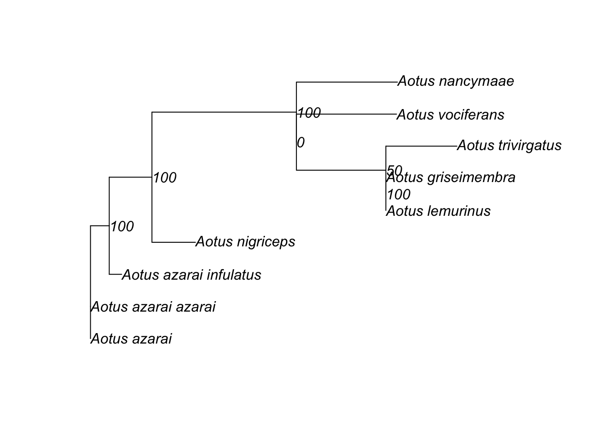
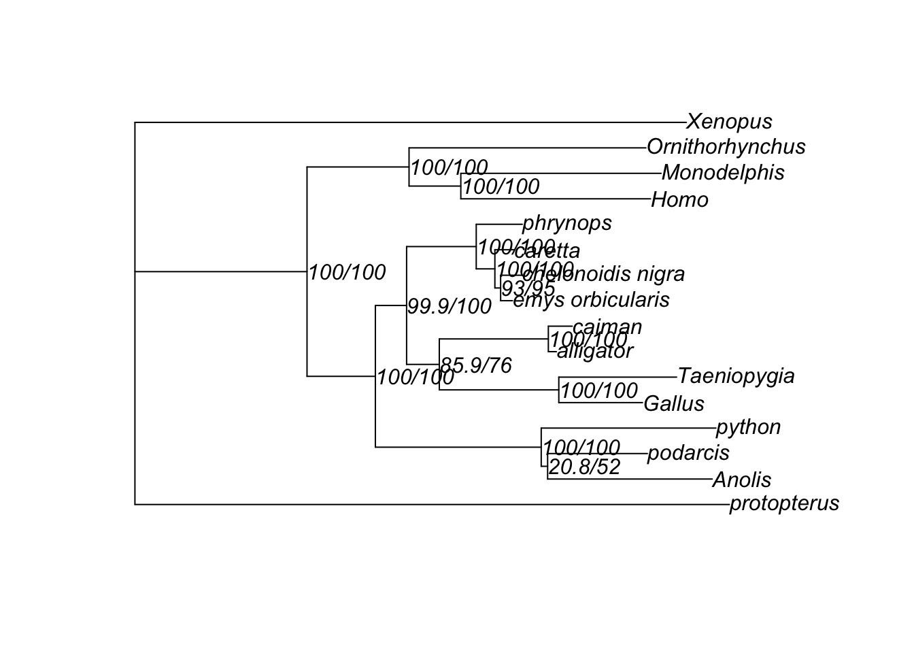

Chapter 16 Maximum likelihood, model tests, tree and branch tests
16.1 Learning Goals
- Running a maximum likelihood tree using IQTREE
- Choose the best sequence evolution model
- Choose the best partition strategy
- Learn how to formally test which phylogeny explains the data significantly better
- Learn how to test the support of specific branches
16.2 IQtree
IQ-TREE is a fast ML inference methods. Check out the paper: B.Q. Minh, H.A. Schmidt, O. Chernomor, D. Schrempf, M.D. Woodhams, A. von Haeseler, R. Lanfear (2020) IQ-TREE 2: New models and efficient methods for phylogenetic inference in the genomic era. Mol. Biol. Evol., 37:1530-1534. https://doi.org/10.1093/molbev/msaa015 IQ-TREE takes as input a multiple sequence alignment and will reconstruct an evolutionary tree that is best explained by the input data. If you have raw (unaligned) sequences, you need to first run an alignment program to align the sequences, before feeding them into IQ-TREE.
16.2.1 Version
Download the COVID-19 release 2.2.0 from http://www.iqtree.org/#download and unzip it to a directory. Copy iqtree2 in the bin folder and your aligned sequences into a new analyzing folder. Then open the terminal and type:
16.2.2 find the best explanatory sequence evolution model
cd ~/Dropbox/teaching/bookdown-demo-main/lab19
./iqtree2 -s aotusCombined_ATP8_aln.fasta -m MFModelFinder will test up to 484 DNA models (sample size: 681) ...
No. Model -LnL df AIC AICc BIC
1 GTR+F 1501.546 23 3049.091 3050.771 3153.133
2 GTR+F+I 1479.285 24 3006.570 3008.399 3115.135
3 GTR+F+G4 1479.289 24 3006.579 3008.408 3115.144
.......
465 JC+G4 1629.674 16 3291.348 3292.168 3363.725
466 JC+I+G4 1629.936 17 3293.873 3294.796 3370.773
467 JC+R2 1630.466 17 3294.933 3295.856 3371.833
Akaike Information Criterion: HKY+F+I
Corrected Akaike Information Criterion: HKY+F+I
Bayesian Information Criterion: HKY+F+I
Best-fit model: HKY+F+I chosen according to BICIQtree iterates through most of the sequence evolution and find the one with the lowest BIC score (Kalyaanamoorthy et al., 2017). Which one is the lowest for your dataset? http://www.iqtree.org/doc/Substitution-Models Check out the Base substitution models here and understand the usage of code by the six digits number.
16.2.3 using the best sequence evolution model
In the above example, the best-fit model according to BIC is HKY+F+I. Let’s specify the model to be the best supported for this alignment and reconstruct a ML phylogeny (Nguyen et al., 2015)
./iqtree2 -s aotusCombined_ATP8_aln.fasta -m HKY+F+I --redo-tree 16.2.4 Different partitions for the data for multiple genes, or different codons
You can also specify different partitions for the data because they are from different genes within one concatenated alignment. 
We can also specify partitioned evolutionary model for different alignments stored in different files:
#nexus
begin sets;
charset part1 = aotusCombined_COI_aln.fasta;
charset part2 = aotusCombined_ATP8_aln.fasta;
charpartition mine = HKY+F+I:part1, HKY+F+G4:part2;
end;We save these contents in aotus_COI+ATP8.nex and we can directly run IQtree using the partition scheme specified by the nexus file using the option -p instead of -s
./iqtree2 -p aotus_COI+ATP8.nex -B 1000Here the tag -B here represents number of bootstraps you’d like to perform.
You can also improve the partitioning scheme automatically by typing
./iqtree2 -p aotus_COI+ATP8.nex -m MFP+MERGE -rcluster 10 -B 1000 --prefix aotus.merge16.3 Run an ML tree with multiple gene files in a folder
The second option to perform multi-gene analyses of potentially dozens or hundreds of genes is to save all the alignment files in a designated folder. In the multigene1 folder, we stored two aligned genes for the genus Aotus. In the multigene2 folder, we stored eight aligned conserved protein sequences of model species.
In IQTree, we can tell the program that instead of one input file, please go check all the input files in a folder.
./iqtree2 -p multigene1 -m MF+MERGE --prefix aotus_concatWe told the program that we would like to do model testing first, and merge the partitions when appropriate. The default algorithm will use the concatenated sequence for the phylogeny inference. Therefore the output file name will have the prefix aotus_concat.
You can also run individual trees for individual genes, and then compare the concordance between the locus trees.
./iqtree2 -S multigene1 -m MF+MERGE --prefix loci16.4 Gene concordance factor
Given the species tree aotus_concat.treefile and the set of locus trees loci.treefile computed above, you can calculate gCF for each branch of the species tree as the fraction of decisive gene trees concordant with this branch:
./iqtree2 -t aotus_concat.treefile --gcf loci.treefile --prefix concordNote that -t accepts any reference tree (e.g., generated by different genes or different phylogenetic inference methods) and --gcf accepts any set of trees (e.g. locus trees or bootstrap trees), which may contain a subset of taxa from the reference tree. IQ-Tree will write three files:
- concord.cf.tree: Newick tree with gCF assigned for each internal branch of the reference tree. If the reference tree already has some branch label (such as bootstrap support in this case), gCF will be appended to the existing label separated by a /.
- concord.cf.branch: Newick tree with internal branch IDs.
- concord.cf.stat: A tab-separated table with gCF and gDF (gene discordance factor) for every internal branch (rows of the table). The ID column can be linked with concord.cf.branch file.
You can visualize the gCF on the trees using FigTree or in R:
library(ape)
concordanceTree<-read.tree("concord.cf.tree")
plot(concordanceTree,show.node.label=T)
16.5 Tree topology tests
IQ-TREE also supports several tree topology tests using the RELL approximation (Kishino et al., 1990). This includes KH and SH tests.
./iqtree2 -s turtle.fa -p turtle.nex.best_model.nex -z turtle.compareTrees -n 0 -zb 1000 --prefix eval-n 0 Only estimate model parameters on an initial parsimony tree and ignore
a full tree search to save time.
-zb Specify the number of RELL (Kishino et al., 1990) replicates (>=1000) to perform several tree topology tests for all trees passed via -z. The tests include bootstrap proportion (BP), KH test (Kishino and Hasegawa, 1989), SH test (Shimodaira and Hasegawa, 1999) and expected likelihood weights (ELW) (Strimmer and Rambaut, 2002).
You will find the results in .iqtree file at the User trees section.
USER TREES
----------
See eval.trees for trees with branch lengths.
Tree logL deltaL bp-RELL p-KH p-SH c-ELW
------------------------------------------------------------------
1 -121332.796 5858.1 0 - 0 - 0 - 0 -
2 -115474.6564 0 0.485 + 0.51 + 1 + 0.5 +
3 -115474.6564 5.3111e-06 0.515 + 0.49 + 0.771 + 0.5 +
deltaL : logL difference from the maximal logl in the set.
bp-RELL : bootstrap proportion using RELL method (Kishino et al. 1990).
p-KH : p-value of one sided Kishino-Hasegawa test (1989).
p-SH : p-value of Shimodaira-Hasegawa test (2000).
c-ELW : Expected Likelihood Weight (Strimmer & Rambaut 2002).
Plus signs denote the 95% confidence sets.
Minus signs denote significant exclusion.
All tests performed 1000 resamplings using the RELL method.The results show that Tree 2 and 3 are not significantly different, but they are superior to Tree1.
16.6 Tree branches tests
IQTree provides two types of branch tests: SH-aLRT and bootstrap. We can run them by specify the following command:
./iqtree2 -s turtle.fa -p turtle.nex.best_model.nex -alrt 1000 -B 1000alrtTree<-read.tree("turtle.nex.best_model.nex.treefile")
plot(alrtTree,show.node.label=T)
16.7 Assignments
Generate three species trees using your own data with at least two loci: an ML tree with the best substitution model, two ML tree with substitution models of the worst scores (you can specify the substitution models for each locus in the .nex file). Copy these three trees into a single tree file. Perform topology tests on the three different trees using your data. Which tree is best supported?
Plot the best supported tree along with the bootstrap and SH-aLRT values. Which branches are least supported. What might be the cause of the low support? What potential approaches could be taken to improve the support (e.g., more sequence data for certain taxa)?
Bonus: Compare the topology of your three ML trees and mark the differences (Hint: recall lab7_coevolution, use cophyloplot from ape or cophylo in the phytools package for inspecting the differences)